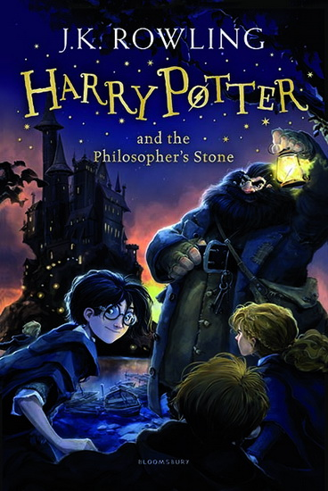
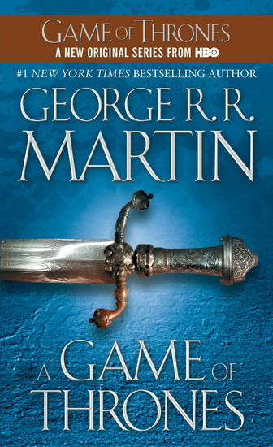

Livres
Titre
Auteurs
Prix
Annee
Langue
Film
Commentaire
Couverture
Harry Potter and the Philosopher's Stone
RowlingJoanne
14.99
1997
Anglais

The Casual Vacancy
RowlingJoanne
11.00
2017
Anglais
L'autre
BotteroPierre
12.99
2006
Francais
The name of the Wind
RothfussPatrick
14.99
2007
Anglais
Premier livre d'une trilogie.
A Game of Thrones
MartinGeorge
13.50
1996
Anglais

The hero
MartinGeorge
9.99
1971
Anglais